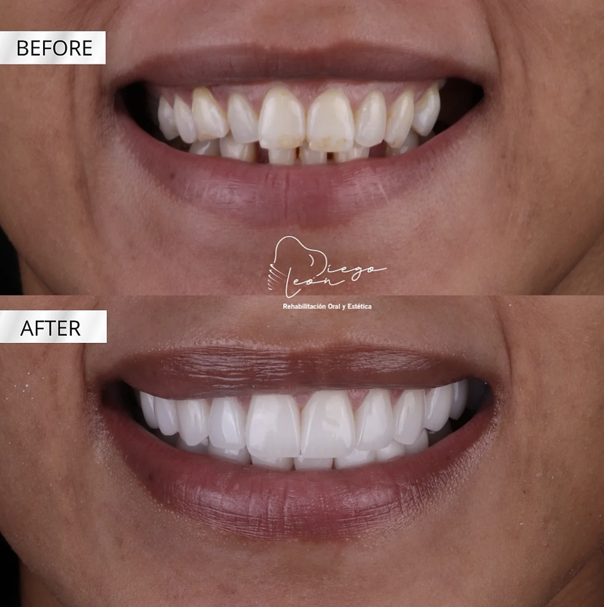
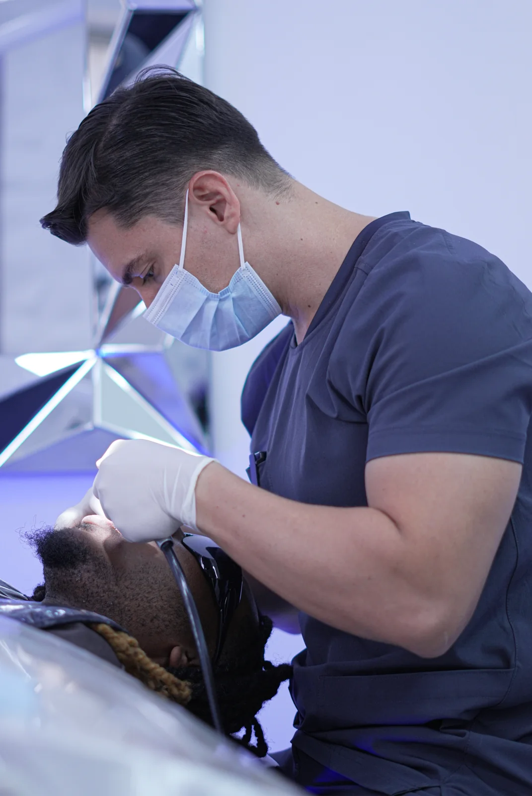

Let’s connect.
Start with a conversation online or through WhatsApp. Share what you would like to explore.
SMILE DESIGN · BUCARAMANGA, COLOMBIA
A smile that feels like you.
A journey that begins with a conversation.
01THE DIFFERENCE IS PERSONAL
Real cases. Individual journeys.Discover smile transformations shared by Dr. Diego León Dental Group. Every story starts with understanding the person behind the smile.

ORIGINAL CLINIC CASEExplore the original before-and-after gallery. Your treatment plan and expected results are discussed individually during your consultation.
Individual results vary. Photographs are from the clinic’s existing website.
02THE PERSON BEHIND THE PRECISION
DR. DIEGO LEÓN
An approach to aesthetic dentistry centered on your features, your goals, and how you want to feel when you smile.
A personalized conversation about shape, shade and proportion, with a clinical assessment to determine whether veneers are appropriate for you.
Explore your goals with the team and discuss a smile plan that considers both appearance and oral health.
An individual evaluation to discuss function, comfort and the treatment options appropriate to your needs.
03FROM WHERE YOU ARE. TO WHO YOU CAN BE.
COLOMBIA · UTC−5Traveling for your smile starts with clarity. Get to know the team, ask your questions, and understand the next steps before making plans.
Start with a conversation online or through WhatsApp. Share what you would like to explore.
Discuss your goals, clinical assessment, treatment possibilities and the details of your visit.
Meet the team in Bucaramanga. Confirm your care plan, visit schedule and follow-up directly with the clinic.
Your questions are welcome.
Your journey is your own.
04IN THEIR OWN WORDS
Press play. Feel the difference.Original stories from the clinic.
Their voices. Their smiles.
Original audio available when you play a story.
05A LITTLE MORE CLARITY
Yes, the clinic works with international patients. Contact the team to discuss an initial conversation and the information needed before your visit.
The number of appointments and length of stay depend on your individual assessment and treatment plan. Confirm these details with the clinic before booking travel.
Speak with the team about your goals and arrange an assessment. Ask for a written breakdown of your treatment, what is included, and any additional costs.
This is an independent design proposal. The calendar is interactive, but its availability is illustrative. No appointment is booked and no information is sent to the clinic.
06YOUR NEXT CHAPTER
One conversation.
A world of possibilities.